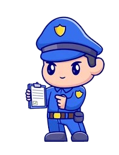

Menú Herramientas GAD
ENLACES POR PAISES
PERMISOS DE CONDUCIR
NÚMEROS DE SERIE
VEHÍCULOS
EXTRANJERÍA
PROTOCOLO DSV (Penal o Admin)
CODIFICADO INFRACCIONES GAD

EN CONSTRUCCIÓN
FUNCIONAMIENTO UNIDAD GAD